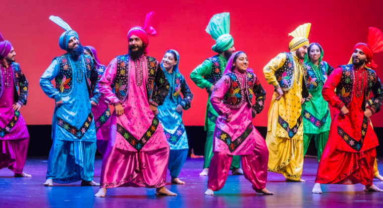
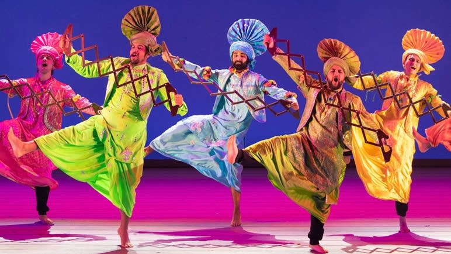
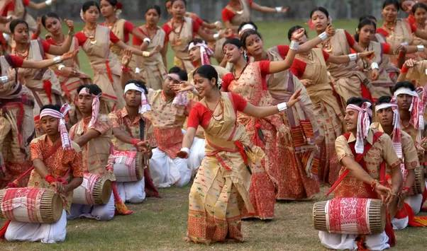
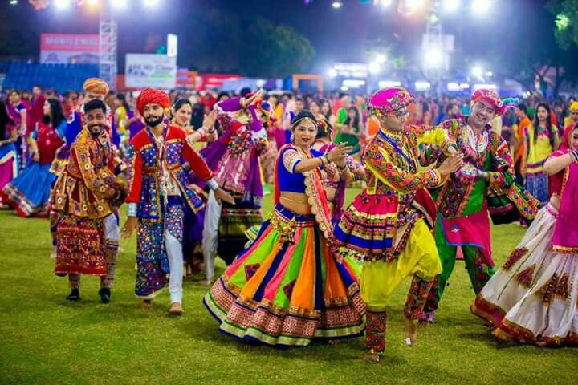
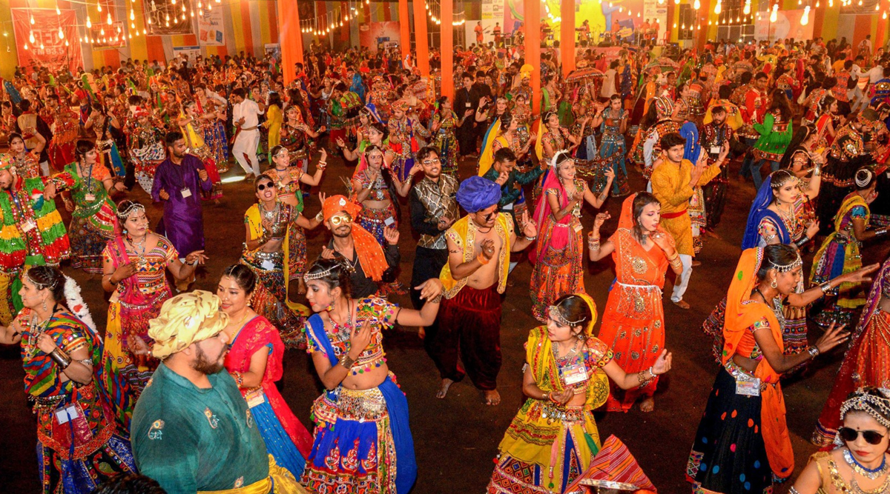
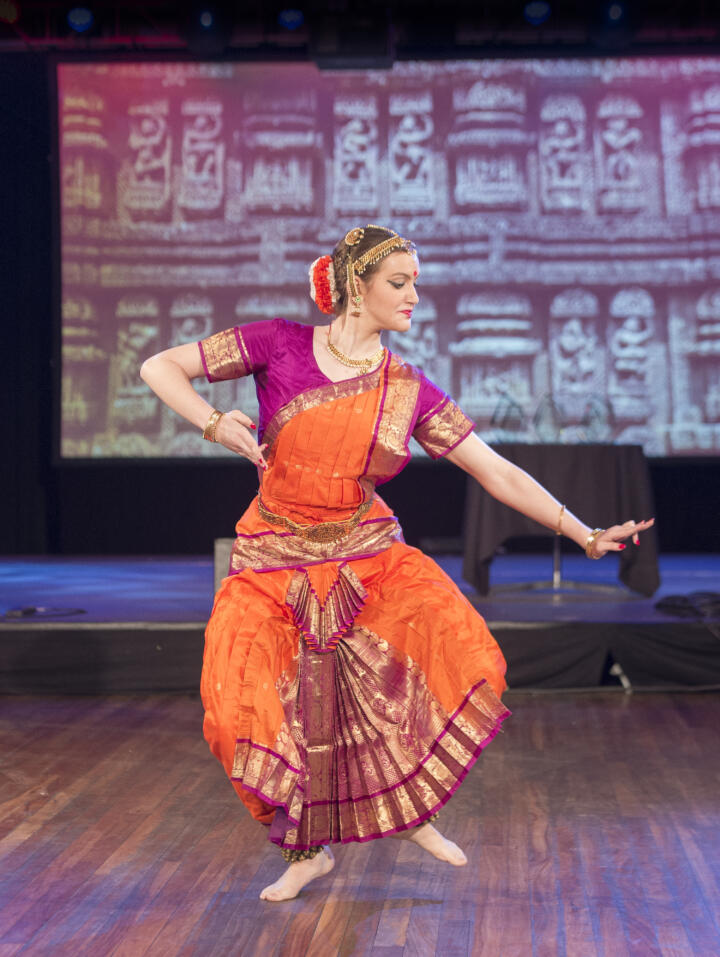
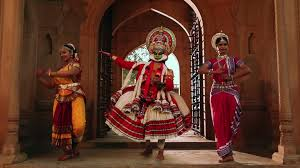
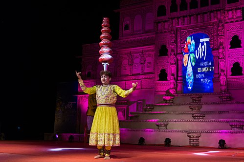
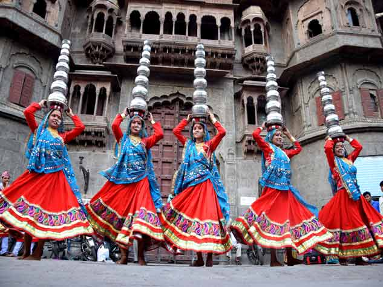

Bhangra : North India (Punjab)


⮚ Accompanied by instruments like the dhol and tumbi, Bhangra expresses the joy and spirit of Punjabi culture and is now enjoyed globally during celebrations and festivals.
More information about this festival :- Click Here
Bihu : East India (Assam)


⮚ The dance reflects themes of love, joy, and fertility, with music created using instruments like the dhol, pepa, and taal.
More information about this festival :- Click Here
Garba : West India (Gujrat)


⮚ Dancers wear colorful outfits and use hand claps or dandiya sticks to create rhythm as they move in graceful, circular steps.
More information about this festival :- Click Here
Bharatanatyam : South India (Tamil Nadu)


⮚ Bharatanatyam is one of the oldest classical dances of India, deeply rooted in Tamil Nadu's temple traditions. It combines precise hand gestures (mudras), rhythmic footwork, and expressive storytelling.
⮚ This dance is spiritual in nature and often depicts stories of Hindu gods and goddesses, performed with devotion and elegance.
More information about this festival :- Click Here
Matki Dance : Central India


⮚ The dance demonstrates balance, poise, and elegance, and reflects the joyous spirit of the rural communities in central India.
More information about this festival :- Click Here